비즈니스 이메일과 공짜 구성의 원리
비즈니스 이메일은 hello@yourbusiness.com처럼 내 회사 도메인을 쓰는 주소예요. yourbusiness@gmail.com 같은 무료 주소보다 손님에게 훨씬 믿음직하게 보이죠.
영상이 소개하는 방법은 메일함 호스팅 비용 없이 이런 주소를 쓰는 길이에요. 다만 처음부터 짚고 가는 비용이 하나 있어요. 도메인은 직접 사야 하고, 확장자와 판매처에 따라 1년에 20~25달러쯤 들어요. 공짜인 건 메일을 옮겨 주는 부분뿐이에요.
받기와 보내기를 두 서비스가 나눠 맡아요
이 구성은 서비스 두 개를 엮어요. Cloudflare의 이메일 라우팅이 회사 주소로 온 메일을 받아서 쓰던 Gmail로 넘겨 주고, Gmail의 'Send mail as' 기능이 답장을 회사 주소로 보내 줘요. 아래 화면의 카드 네 장이 메일 한 통이 오가는 순서예요. 맨 아래 카드처럼 손님 눈에는 개인 Gmail 주소가 아니라 회사 주소만 보여요.
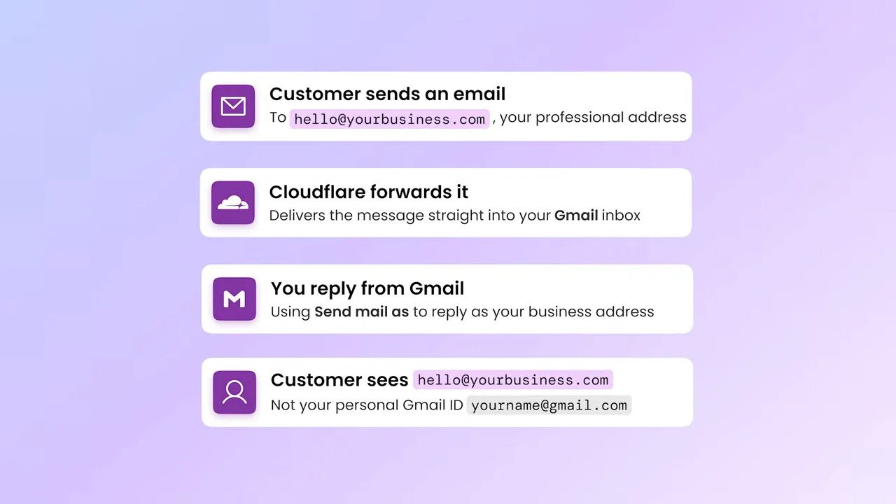
따로 메일함을 사지 않아도 완성된 회사 메일함처럼 느껴지는 이유가 이 분업이에요. 그리고 영상이 경고하는 문제도 바로 이 둘 중 보내기 쪽에서 생겨요.
Cloudflare 이메일 라우팅으로 받기
첫 번째 절반은 받기예요. 손님이 hello@yourbusiness.com으로 보낸 메일이 매일 열어 보는 Gmail로 바로 들어오게 만드는 단계예요. 새 메일함을 하나 더 챙기지 않아도 돼요.
시작 전에 조건이 하나 있어요. 도메인을 Cloudflare에 추가하고, 그 도메인의 DNS(Domain Name System)를 Cloudflare가 관리해야 해요. 다른 곳에서 DNS를 관리하고 있다면 먼저 Cloudflare로 옮겨야 이메일 라우팅이 동작해요.
설정 순서
대시보드 왼쪽 메뉴에서 빨간 상자로 표시한 Email 항목이 출발점이에요.
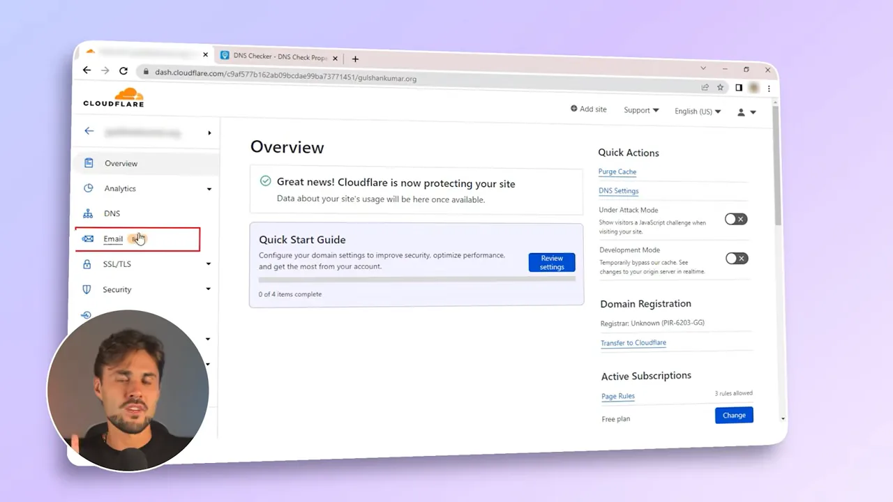
Email Routing 화면에서는 세 칸을 채워요. 왼쪽 Custom address에 hello를 넣고, 가운데 Action은 Send to, 오른쪽 Destination address에 받을 Gmail 주소를 넣어요.
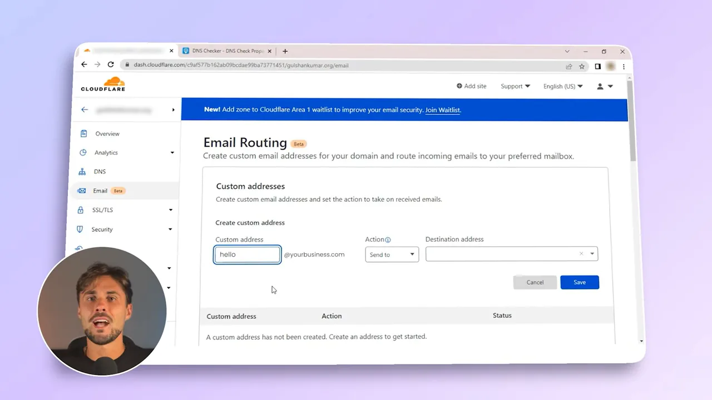
저장하면 Cloudflare가 그 Gmail로 확인 메일을 보내요. 메일 안의 파란 Verify email address 버튼을 눌러 받는 주소를 인증해요. 그러면 Cloudflare가 도메인에 필요한 라우팅 레코드를 알아서 추가해요.
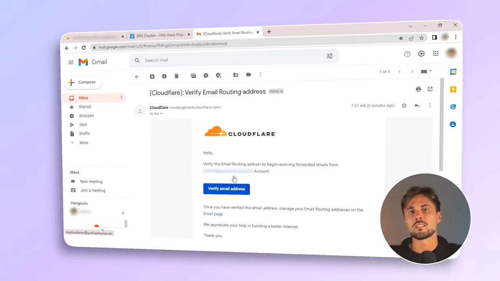
마지막으로 다른 계정에서 회사 주소로 'test email forwarding'이라는 메일을 보내 봐요. 받은편지함 맨 위에 그 메일이 들어와 있어요. 그 아래 줄은 앞에서 받은 Cloudflare 인증 메일이에요.
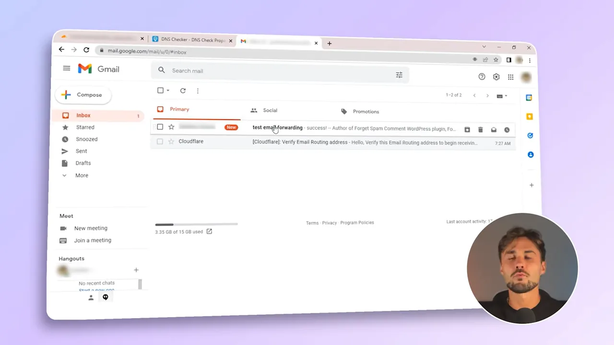
무료로 쓸 수 있는 한도
영상은 작은 사업체라면 아래 한도로 충분하다고 봐요.
| 항목 | 한도 |
|---|---|
| 라우팅 규칙 | 도메인당 200개 |
| 인증된 받는 주소 | 계정당 200개 |
| 받는 메일 크기 | 약 25MB |
Gmail 'Send mail as'로 회사 주소로 답장하기
받기만 해 두면 절반짜리예요. 회사 주소로 온 메일에 Gmail에서 그냥 답장하면, 손님은 yourname@gmail.com에서 온 답을 받게 돼요. 아래 세 장의 카드가 그 흐름이에요. 맨 오른쪽 빨간 카드처럼 회사 주소로 연락했는데 개인 주소로 답이 오면, 애써 만든 전문적인 인상이 깨져요.
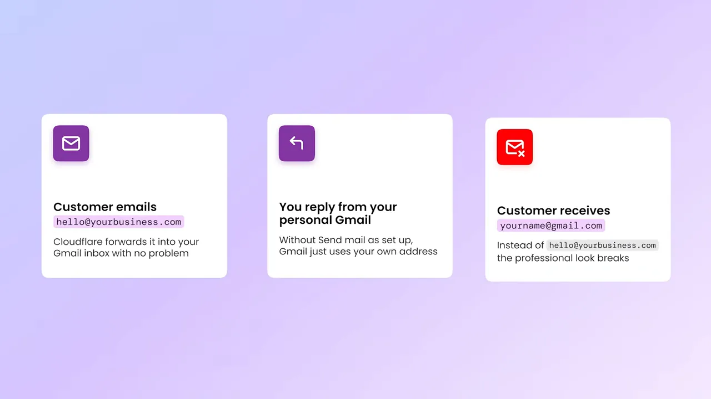
Gmail에 회사 주소 추가하기
Gmail 설정의 Accounts and Import 탭으로 가요. 가운데쯤 Send mail as 줄에 있는 Add another email address 링크를 눌러요.
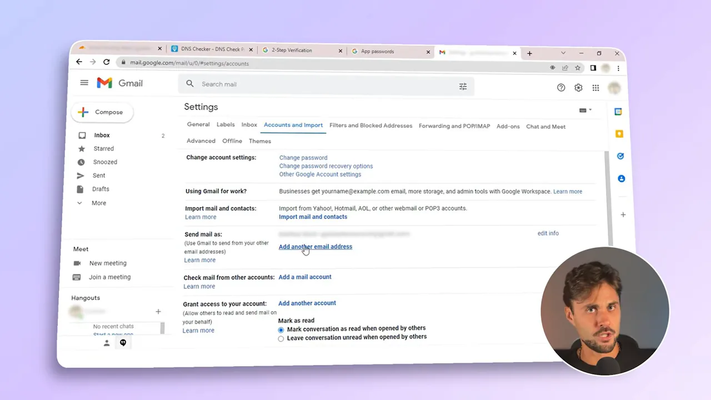
회사 주소를 넣으면 어떤 메일 서버로 보낼지 묻는 노란 창이 떠요. 영상 화면에서는 SMTP(Simple Mail Transfer Protocol) Server에 smtp.gmail.com, Port에 587, Username에 개인 Gmail 주소를 넣고 TLS(Transport Layer Security) 연결을 골랐어요. 영상은 설정에 따라 SMTP 정보, 2단계 인증, 앱 비밀번호가 필요할 수 있다고만 말해요. 위쪽 탭에 2-Step Verification과 App passwords가 열려 있는 것도 그래서예요.
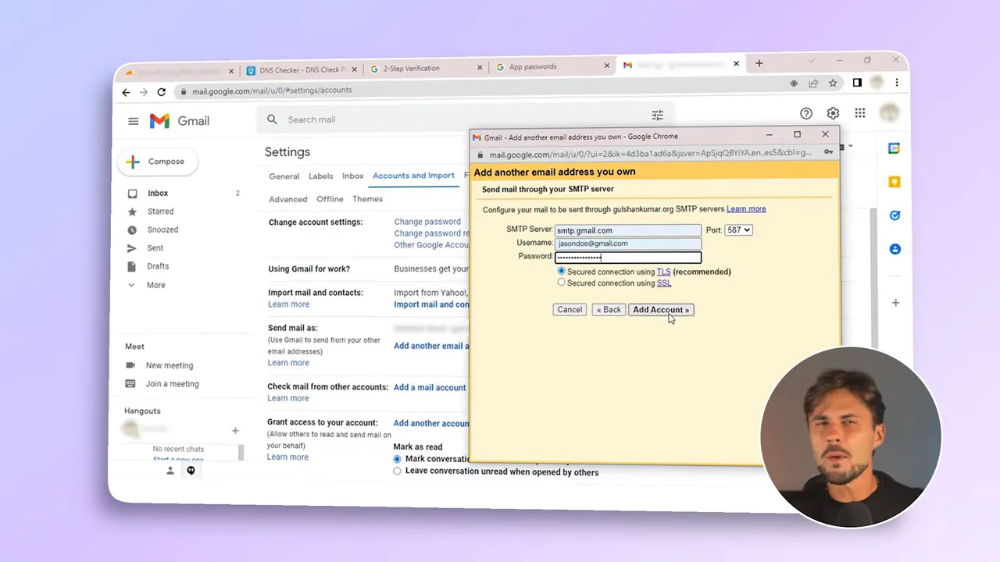
Add Account를 누르면 Gmail이 회사 주소로 확인 메일을 보내요. 앞에서 Cloudflare가 회사 주소로 온 메일을 Gmail로 넘기도록 해 뒀으니, 이 확인 메일도 같은 받은편지함에 들어와요. 열어서 확인하면 끝이에요.
이제 새 메일을 쓰거나 답장할 때 보내는 사람 칸에서 주소를 고를 수 있어요. 아래 화면의 빨간 상자 안 드롭다운에 회사 주소와 개인 Gmail 주소가 함께 떠 있어요.
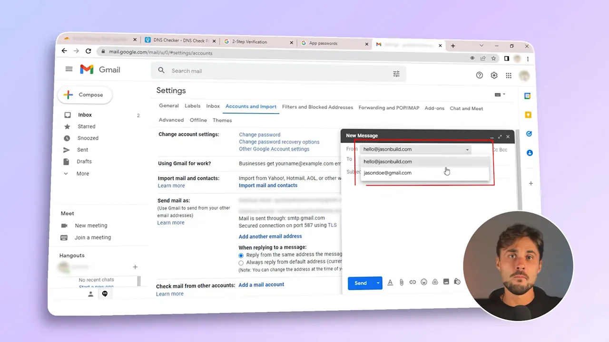
2027년 1월에 무엇이 사라지나요?
여기까지가 인터넷에서 많이 추천하는 무료 구성이에요. 그런데 영상이 가장 강조하는 문제가 있어요. Google이 2027년 1월부터 외부 주소에 대한 'Send mail as' 지원을 끝낸다고 발표했어요. 영상은 이 소식을 다룬 Android Authority 기사를 보여 줘요. 노란 형광펜 부분이 그 핵심 문장이에요.
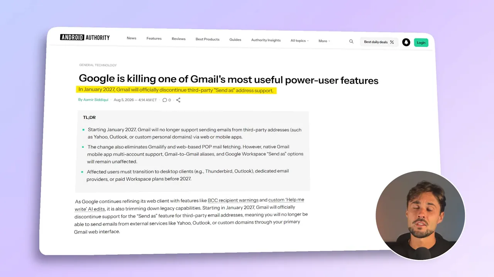
멈추는 쪽은 보내기뿐이에요
영상은 모든 게 한꺼번에 멈추는 건 아니라고 짚어요. Cloudflare가 맡은 받기는 계속 돼요. 회사 주소로 온 메일은 여전히 Gmail로 들어와요. 사라지는 건 Gmail에서 회사 주소로 답장하던 보내기 쪽이에요.
그래서 이미 이 구성을 쓰는 사람보다, 오늘 새로 회사 메일을 꾸리는 사람이 더 신경 써야 해요. 곧 없어질 기능 위에 일하는 방식을 쌓는 셈이니까요.
어떤 방법을 고를까요?
영상은 끝에서 Cloudflare 쪽 장단점을 카드 네 장으로 정리해요. 위 두 장은 장점, 아래 두 장은 한계예요. 받는 일은 공짜로 잘하지만 혼자서는 완성된 회사 메일함이 아니고, 보내기를 메워 주던 Gmail 기능은 2027년 1월에 빠져요.
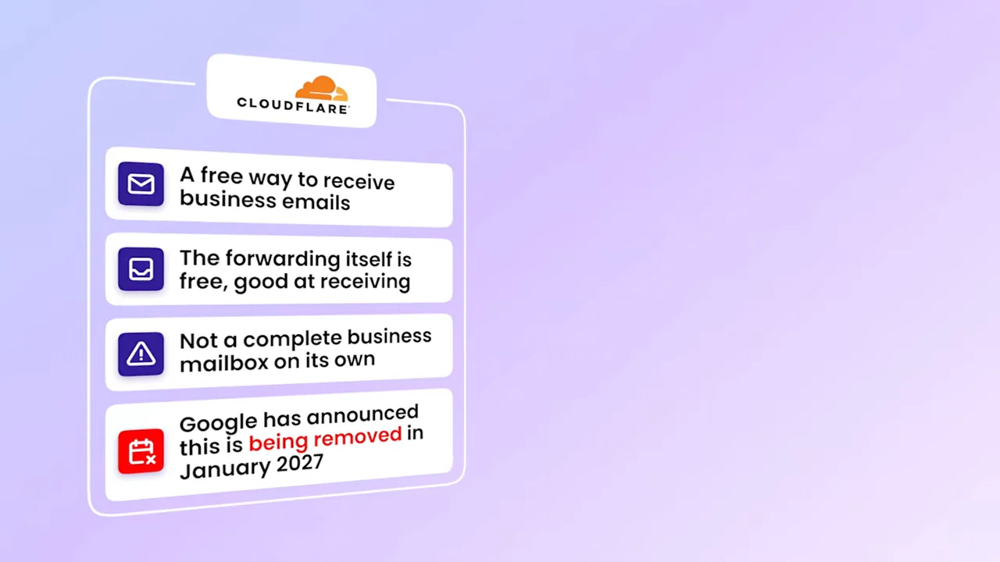
결론은 무엇이 필요하냐에 따라 갈려요.
| 상황 | 영상이 권하는 쪽 |
|---|---|
| 도메인이 이미 있고, 회사 주소로 오는 메일을 쓰던 메일함에서 받기만 하면 돼요 | Cloudflare 이메일 라우팅. 전달은 무료이고 받기는 잘해요 |
| 같은 회사 주소로 보내고 받기를 모두 해야 해요 | 전용 비즈니스 이메일 서비스. 여러 서비스를 엮지 않아도 돼서 설정과 관리가 훨씬 쉬워요 |
전용 서비스는 달마다 돈이 들어요. 대신 진짜 메일함이라 보내기와 받기가 한 주소에서 끝나요. 공짜 구성은 도메인 값 말고는 비용이 없지만, 보내기 쪽이 남의 기능에 기대고 있다는 게 약점이에요.